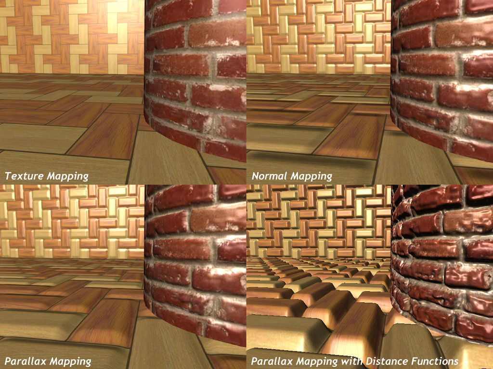

| Parallax mapping - это модифицированная версия известной техники bumpmapping, используемой для придания текстурам рельефности. Parallax mapping не создает 3D-объектов в обычном понимании этого слова. Например, пол или стена в игровой сцене будут выглядеть шероховатыми, оставаясь на самом деле абсолютно плоскими. Эффект рельефности здесь достигается лишь за счет манипуляций с текстурами. |  |